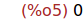
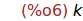
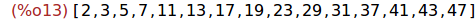
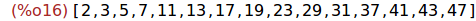
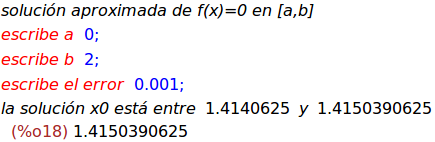
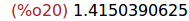

Tema CS5: Programación
(Ejercicios resueltos)
1 Funciones y procedimientos
Ejercicio 1.1. Se definen las variables a y b y el procedimiento ej_proc(n)
como sigue
a:0$
b:1$
ej_proc(n):=block([a,k], a:2, k:3, a+b+k-n)$
Calcular los valores de ej_proc(10), a y k.
(%i1)
a:0$
b:1$
ej_proc(n):=block([a,k], a:2, k:3, a+b+k-n)$
(%i4)
ej_proc(10);
(%i5)
a;

(%i6)
k;

2 Estructura condicional
Ejercicio 2.1. Un número natural es perfecto si es igual a la suma de sus
divisores positivos distintos de él mismo. Definir el procedimiento
perfecto(n) que se verifique si n es un número perfecto. Por ejemplo,
(%i1) perfecto(2.5)$ perfecto(-3)$ perfecto(6)$ perfecto(9)$
2.5 no es un número natural
-3 no es un número natural
6 es un número perfecto
9 no es un número perfecto
(%i7)
perfecto(n):=block(
if n#floor(n) or n<0 then print(n," no es un número natural")
elseif n=divsum(n)-n then print(n," es un número perfecto")
else print(n," no es un número perfecto"))$
(%i8)
perfecto(2.5)$ perfecto(-3)$ perfecto(6)$ perfecto(9)$
3 Iteración con el bucle para (for)
Ejercicio 3.1. Definir, por iteración con for, el procedimiento primos
tal que primos(n) es la lista de los números primos menores o iguales
que n. Por ejemplo,
(%i1) primos(50);
(%o1) [2,3,5,7,11,13,17,19,23,29,31,37,41,43,47]
(%i12)
primos(n):=block([lista,k],
lista : [],
for k from 1 thru n do
(if primep(k) then lista : cons(k,lista)),
reverse(lista))$
(%i13)
primos(50);

Ejercicio 3.2. Definir, por recursión, la función primosR tal que
primosR(n) es la lista de los números primos menores o iguales
que n. Por ejemplo,
(%i1) primosR(50);
(%o1) [2,3,5,7,11,13,17,19,23,29,31,37,41,43,47]
(%i14)
primosR(n) := reverse(primosRaux(n))$
primosRaux(n) :=
if n=0 then []
elseif primep(n) then cons(n,primosRaux(n-1))
else primosRaux(n-1)$
primosR(50);

4 Iteración con el bucle mientras (while)
Ejercicio 4.1. Definir, por iteración con while, el procedimiento
biseccion tal que biseccion(f) pregunta por el valor inferior, a,
el valor superior, b, y el error, e y calcula la solución de f(x)=0 entre
a y b con un error menor que e. Por ejemplo,
(%i1) (g(x):=x^2-2, biseccion(g));
solución aproximada de f(x)=0 en [a,b]
escribe a 0;
escribe b 2;
escribe el error 0.001;
la solución x0 está entre 1.4140625 y 1.4150390625
(%o47) 1.4150390625
(%i17)
biseccion(f):=block([a,b,e],
print("solución aproximada de f(x)=0 en [a,b]"),
a : read("escribe a "),
b : read("escribe b "),
e : read("escribe el error "),
while (b-a)>e do
(c : (a+b)/2,
if f(a)*f(c)<0 then b:c else a:c),
print("la solución x0 está entre ",float(a)," y ",float(b)))$
(%i18)
(g(x):=x^2-2, biseccion(g));

Ejercicio 4.2. Definir, por recursión, la función biseccionR tal que
biseccionR(f,a,b,e) es la solución de f(x)=0 entre a y b con un error
menor que e. Por ejemplo,
(%i1) (g(x):=x^2-2, biseccionR(g,0,2,0.001)), numer;
(%o1) 1.4150390625
(%i19)
biseccionR(f,a,b,e) := block([c],
if b-a <= e then b
else (c : (a+b)/2,
if f(a)*f(c)<0 then biseccionR(f,a,c,e)
else biseccionR(f,c,b,e)))$
(%i20)
(g(x):=x^2-2, biseccionR(g,0,2,0.001)), numer;

Fin.